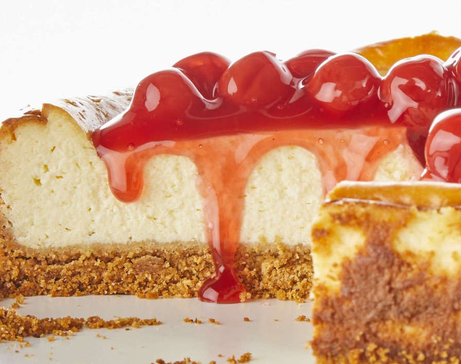

Cheesecake

Ingredients
- 1 ¾ cups Honey Maid Graham Cracker Crumbs
- ⅓ cup butter, melted
- ¼ cups sugar, divided
- 3 (8 ounce) packages Philadelphia Cream Cheese, softened
- 1 cup Breakstone's or Knudsen Sour Cream
- 2 teaspoons vanilla
- 3 large eggs
- 1 (21 ounce) can cherry pie filling
Steps
- Preheat the oven to 350 degrees F (180 degrees C).
- Mix graham crumbs, butter, and 1/4 cup sugar together in a large
bowl.
- Press crumbs onto bottom of 9-inch springform pan.
- Beat cream cheese and remaining sugar in large bowl with mixer
until blended. Add sour cream and vanilla; mix well.
- Add eggs, 1 at a time, beating on low speed after each addition
just until blended.
- Pour mixture over crust.
- Bake in the preheated oven until the center is almost set, about
1 hour to 1 hour 10 minutes. Run knife around rim of pan to loosen
cake; cool before removing rim. Refrigerate cheesecake 4 hours.
- Top with pie filling before serving.